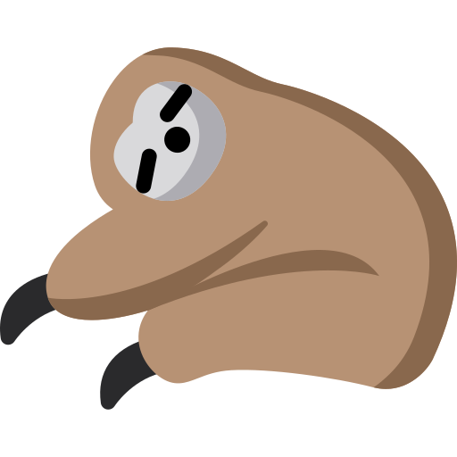

EVLUACION PEREZOSA En programación la evaluación perezosa, o llamada por necesidad, o por su nombre en inglés: lazy evaluation. Es una técnica de evaluación, sí porque hay varias técnicas, que consiste en retrasar el cálculo (o ejecución) de una instrucción hasta que en realidad es necesaria. 